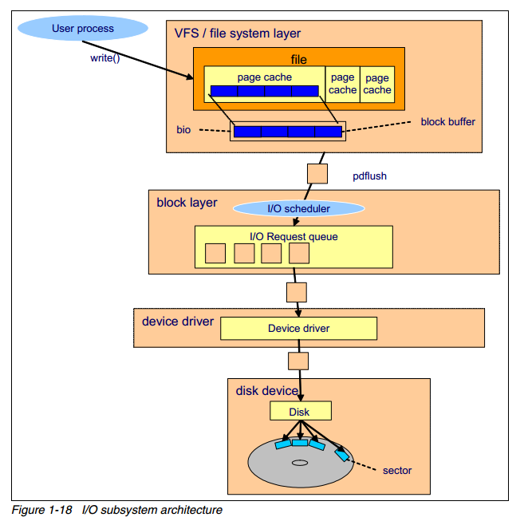
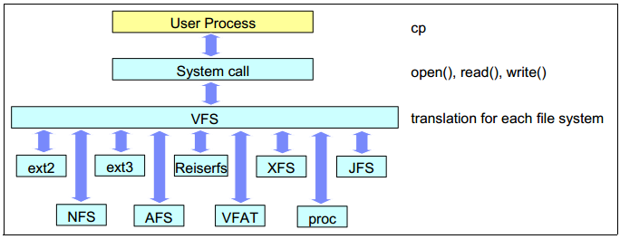

Ext3
日志型文件系统
日志型文件系统的区别在于，在进行对文件系统写数据之前，写将数据写到「日志区」，然后再写入文件系统，在写入文件系统之后删除日志。
日志区的数据称作文件系统日志，这些数据包含了修改了的元数据，也可能包含将要修改的数据。写日志也会带来一定的额外开销。
ext3的日志模式
- journal，数据和元数据都写入日志，提供了最高的数据一致性
- ordered，只记录元数据，然后它会保证先将数据写入磁盘，这是缺省的Ext3日志模式。
- writeback，采用回写的方式，牺牲数据一致性，获得更好的性能。仍然会将元数据记录到日志中，此模式对
小文件IO性能提升最为明显，但可能造成数据丢失。
将日志放在单独的设备中
日志区可以在文件系统内部也可以在文件系统外部
- 卸载文件系统
- 查看文件系统块大小和日志参数 $ dumpe2fs \/dev\/sdb1
- 移除文件系统内部的日志区 $ tune2fs -O ^has_journal \/dev\/sdb1
- 创建外部的日志设备 $ mke2fs –O journal_dev -b block-size \/dev\/sdc1
- 更新原文件系统的超级块 $ tune2fs -j -J device=\/dev\/sdc1 \/dev\/sdb1
barrier
barrier 是保证日志文件系统的 WAL (write ahead logging) 一种手段，数据写入磁盘时，理应先写入 journal 区，再写入数据在磁盘的实际对应位置，磁盘厂商为了加快磁盘写入速度，磁盘都内置 cache，数据一般都先写入磁盘的cache。
cache 能加快写入速度，但磁盘一般会对 cache 内缓存数据排序使之最优刷新到磁盘，这样就可能导致要刷新的实际数据和 journal 顺序错乱。一旦系统崩溃，下次开机时磁盘要参考 journal 区来恢复，但此时 journal 记录顺序与数据实际刷新顺序不同就会导致数据反而「恢复」到不一致了。而barrier 如其名——「栅栏」，先加一个「栅栏」，保证 journal 总是先写入记录，然后对应数据才刷新到磁盘，这种方式保证了系统崩溃后磁盘恢复的正确性，但对写入性能有影响。
数据库服务器底层存储设备要么采用 RAID 卡，RAID 卡本身的电池可以掉电保护；要么采用 Flash 卡，它也有自我保护机制，保证数据不会丢失。所以我们可以安全的使用 nobarrier 挂载文件系统。设置方法如下： 对于 ext3，ext4 和 reiserfs 文件系统可以在 mount 时指定 barrier=0；对于 xfs 可以指定 nobarrier 选项。
I\/O子系统架构

上图概括了一次磁盘 write 操作的过程，假设文件已经被从磁盘中读入了 page cache 中。
- 一个用户进程通过 write() 系统调用发起写请求
- 内核更新对应的 page cache
- pdflush 内核线程将 page cache 写入至磁盘中
- 文件系统层将每一个 block buffer 存放为一个 bio 结构体，并向块设备层提交一个写请求
- 块设备层从上层接受到请求，执行 IO 调度操作，并将请求放入IO 请求队列中
- 设备驱动（如 SCSI 或其他设备驱动）完成写操作
- 磁盘设备固件执行对应的硬件操作，如磁盘的旋转，寻道等，数据被写入到磁盘扇区中
VFS （上面1-3步）
文件系统是内核的功能，是一种工作在内核空间的软件，访问一个文件必须要需要文件系统的存在才可以。Linux 可以支持多达数十种不同的文件系统，它们的实现各不相同，因此 Linux 内核向用户空间提供了虚拟文件系统这个统一的接口用来对文件系统进行操作。

block layer （4-5步）
Block layer 处理所有和块设备相关的操作。
block layer 最关键是数据结构是 bio 结构体。bio 结构体是 file system layer 到 block layer 的接口。 当执行一个写操作时，文件系统层将数据写入 page cache（由 block buffer 组成），将连续的块放到一起，组成 bio 结构体，然后将 bio 送至 block layer。
block layer 处理 bio 请求，并将这些请求链接成一个队列，称作 IO 请求队列，这个连接的操作就称作 IO 调度（也叫 IO elevator 即电梯算法）.
IO scheduler IO 调度器的总体目标是减少磁盘的寻道时间（因此调度器都是针对机械硬盘进行优化的），IO 调度器通过两种方式来减少磁盘寻道：合并和排序。
合并：当两个或多个 IO 请求的是相邻的磁盘扇区，那么就将这些请求合并为一个请求。通过合并请求，多个 IO 请求只需要向磁盘发送一个请求指令，减少了磁盘的开销。
排序：将不能合并的 IO 请求，根据请求磁盘扇区的顺序，在请求队列中进行排序，使得磁头可以按照磁盘的旋转顺序的完成 IO 操作，可以减小磁盘的寻道次数。
device driver (第6步)
磁盘驱动
disk device (第7步)
磁盘操作